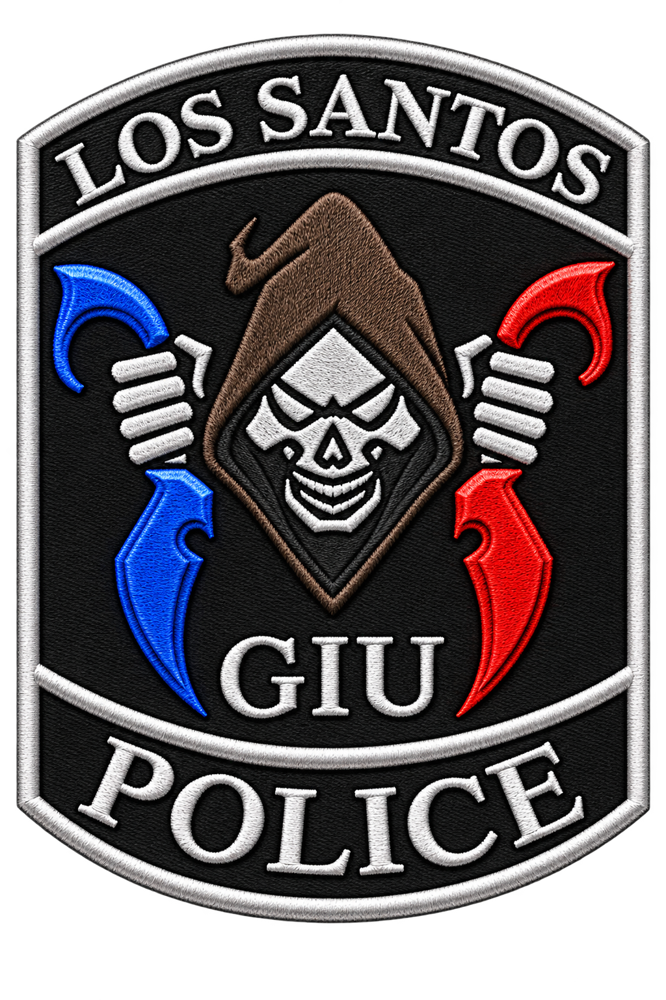

A selection-based, operationally driven unit tasked with surveillance, apprehension, and intelligence operations against organized criminal networks within Los Santos.
GIU operates as a joint specialized unit composed of selected personnel from the Special Operations Division (SOD) and Central Intelligence Bureau (CIB).
Assignment to CIB or SOD does not automatically grant placement within the GIU Main Roster. Personnel are selected based on operational suitability, discipline, field capability, intelligence value, and current mission requirements.
Source pool for field-capable personnel selected into Ghost elements based on tactical proficiency and discipline.
Source pool for intelligence-driven personnel, including Recon assignments and case-specific analytical support.
Main Roster designates the permanent operational core of GIU. Every callsign below is confirmed, current, and cleared for active deployment.
Ghost Leaders serve as GIU's primary field leadership and may assume operational command, coordinate Ghost elements, and lead deployments under the direction of Ghost Actual.
Ghost Operatives form the primary operational element of GIU and may be deployed for surveillance, apprehension, intelligence operations, covert assignments, and other mission-specific objectives.
Recon personnel primarily support GIU through reconnaissance, surveillance, intelligence collection, target observation, and operational information relay.
CIB personnel not assigned to the GIU Main Roster remain eligible for deployment when their involvement supports a specific investigation or operational narrative. Department-wide, all Troopers and Chiefs are authorized to provide operational support to GIU when required, under the supervision and authority of the Commissioner's Office.
Permanent operational core. Confirmed callsigns, standing clearance, direct chain of command to Ghost Actual.
Mission and narrative-based attachment. Deployed as investigations require, without permanent designation.
GIU will therefore remain a small, specialized operational unit while continuing to utilize the broader capabilities of CIB and SOD whenever an investigation requires additional personnel, expertise, or narrative involvement.
Being outside the Main Roster does not mean being outside GIU operations. It means deployment will be based on relevance, capability, and operational necessity. — GIU COMMAND DIRECTIVE